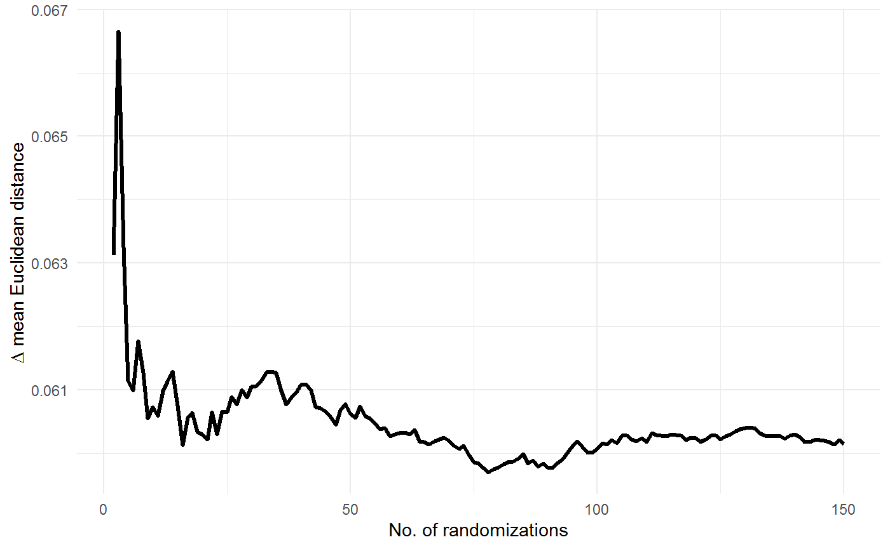
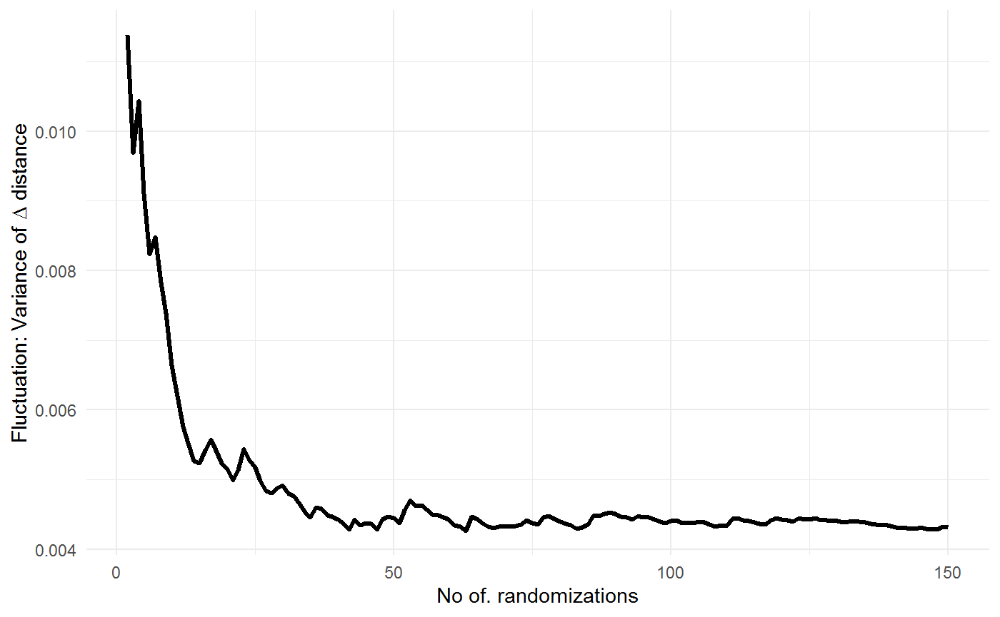

vignettes/tiefightR_Vignette.Rmd
tiefightR_Vignette.RmdPreference tests are a valuable tool to measure the “wants” of individuals and have been proven to be a valid method in order to rate different commodities. The number of commodities presented at the same time is, however, limited and in classical test settings usually only two options are presented. In our paper we evaluate the option of combining multiple binary choices in order to rank preferences among a larger number of commodities. The tiefightR package offers the neccessary tools to test selections of commodities and to obtain an estimate of their relative position.
For data binarization a preference threshold for ties is needed (by default this is 50% for an equal commodity selection Likelihood). In case of ties, the binary response variable is randomized. Therefore, the analysis has to be repeated multiple times for getting more robust estimates of the tested commodities’ position in the data.
Further, the tiefighteR package offers simulation capabilities. This will help to determine the position of individual items without having to test the whole data set. The simulation will randomly test an item against all remaining combinations. These calculations are combined with an estimate on the intransitivity which acts as a quality sign for the found position. The simulation results can give an indication for similar data and how new commodities can be positioned.
We conducted experiments with rhesus macaques, mice, and humans in order to validate the ranking method across species. These data sets are included in the package and are called human, mouse and rhesus. The response variable for human is binary and for rhesus and mouse it is continous (i.e., the amount of drank liquid). In order to harmonize the analysis, the continous data will have to be binarized.
The following example (mouse) shows how the raw (input) data need to be structured. The “pref_img1” is the binary response variable.
head(tiefightR::mouse) #> date animalID side fluidType numOF_visits_with_Licks #> 1 09.07.2018 ro_ge_4 left HCl 7 #> 2 09.07.2018 ro_ge_4 right NaCl 17 #> 3 10.07.2018 ro_ge_4 left NaCl 1 #> 4 10.07.2018 ro_ge_4 right HCl 22 #> 5 09.07.2018 ro_si_4 left HCl 13 #> 6 09.07.2018 ro_si_4 right NaCl 21 #> total_visits_withLicks combinationWith test_no no_licks total_licks #> 1 21 NaCl 1 543 1740 #> 2 21 HCl 1 1197 1740 #> 3 23 HCl 1 1 1528 #> 4 23 NaCl 1 1527 1528 #> 5 34 NaCl 1 722 2097 #> 6 34 HCl 1 1375 2097
The column names in different data sets can be different. Therefore, the functions have fields that need specification. The following names should be adjusted when they are different (e.g. in the tie_worth function).
SV = "side" # name of the side variable (default = "side_img1") RF = "fluidType" # name of the reference fluid variable (default = "img1") CF = "combinationWith" # name of the combination fluid variable (default = "img2") id = "animalID" # subject IDs (default = "ID") RV = "numOF_visits_with_Licks" # name of the response variable (default = "pref_img1")
The output of the tie_worth function are worth values that can be ranked for position. When ties are present (or introduced), the worth values will shift. The question is: when can a user be certain that a position is legit when ties are present? In order to stabilise the position in terms of worth values, we use the power of the central tendency shift of the mean. The more often a random test is repeated, the more stable the mean becomes. In order to generalize the different distances we calculate the (Euclidean) distance matrix of the worth values at each randomization step and report the average distance over the number of randomizations. It can be expected that the mean Euclidean distance and the corresponding variance stabilize.
Consider the following worth plot for binary mouse data. The distance between two data points is simply the difference between worth values. In the distance matrix the distances for all combinations are calculated.
Concept of the Euclidean distance measurement between worth values.
Of course, this only works when ties are present! Otherwise, there would be nothing to randomize.

The plots show that the overall change in Euclidean distances is small. The largest step occurs within the first 50 to 75 randomization steps. The corresponding SD of the distances corroborates this. Empirically, for these mouse data, at least 50 randomizations are required to obtain stable mean positions with the tested commodities.
With this knowledge, individual items from the commodity list can be tested. The tie_test function was specifically designed to test individual combinations. For example, if the position of the NaCl item is to be tested (e.g., at 50 randomizations), the user combines this with any other item combination from the list. As a further criterion (and sign of good quality), the intransitivity is computed as well. The user can add more items to the tested “against” list for getting more confidence in the positioning of the tested item (hopefully, with lower intransitivity).
#> against worth pos intrans I_sd upr lwr
#> NaCl HCl 0.19 2 35.33 2.08 40.5 30.16NaCl is positioned on position 2 (which is the truth, with HCl in position 1). Adding more items can lower the intransitivity (but depends on the individual intransitivities in the data set).